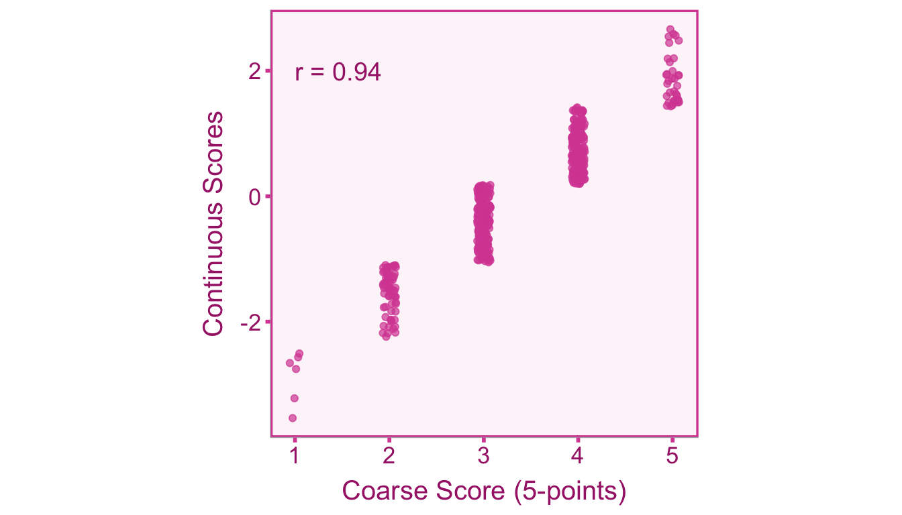
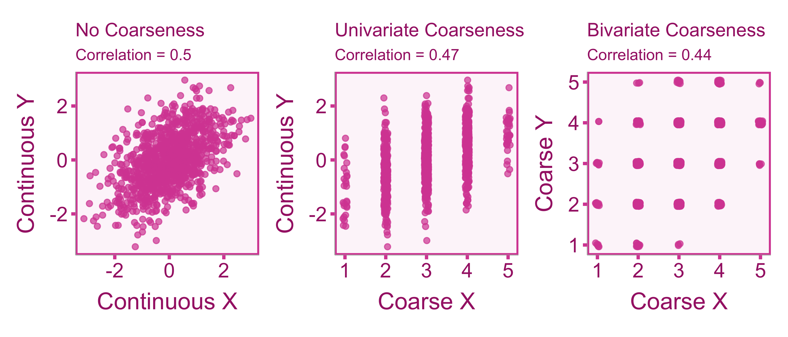

9 Scale Coarseness
9.1 Introduction
Scale coarseness describes a situation where a variable that is naturally continuous (e.g., happiness) is binned into discrete values (e.g., happiness measured on a scale of 1-10). This situation is quite common in the social and psychological sciences where Likert items or dichotomous yes/no responses are aggregated to form a coarse total score for a naturally continuous construct. When coarseness is present, measurement error is introduced into the observed scores and those scores lose information.
9.2 Dichotomizing Continuous Random Variables
Unlike dichotomization, coarseness is an artifact that occurs due to the design of the study rather than during the analysis phase (Aguinis, Pierce, and Culpepper 2009). Particularly, dichotomization occurs after scores are obtained (e.g., splitting a group into high scorers and low scorers), whereas coarseness occurs as an artifact of the measurement procedure itself. This can be visualized by correlating coarse scores with their underlying continuous scores (see Figure 9.1). You will notice that the correlation between coarse and continuous scores is not perfect, indicating that the coarse scores do not perfectly capture the underlying continuous scores.
9.3 Correcting Correlations
9.3.1 Defining our Target Correlation
Our quantity of interest is the population correlation, \(\rho\), between continuous independent variable, \(X\), and continuous dependent variable, \(Y\). However, in a given study the measurement procedure may produce coarse scores for \(X\) and \(Y\). We will denote coarse scores with the subscript \(C\) We can model the relationship between the observed sample correlation on coarse scores and the true population correlation,
\[ r_{\widetilde{X}\widetilde{Y}} = \alpha\rho_{XY}+\varepsilon_r. \]
Where \(\alpha\) is our artifact attenuation factor and \(\varepsilon_r\) is our sampling error term.
9.3.2 Artifact Correction for Coarseness
Provided that the cuts are equally spaced, course attenuation of the correlation (MacCallum et al. 2002). Furthermore if we correlate a coarse score with another coarse score than we will observe even more attenuation (see Figure 9.2). There are two cases that we can run into: 1) the univariate case where only one variable is coarse and 2) the bivariate case where both variables are coarse.

To correct the correlation between coarse scores, we need to know the correlation between coarse scores and their underlying continuous scores (\(\rho_{X\widetilde{X}}\) or \(\rho_{Y\widetilde{Y}}\)). The calculation of the correlation will require us two important assumptions:
- The shape of the underlying distribution (i.e., normal or uniform).
- The intervals between scale-points are equal.
Based on these assumptions, Peters and Voorhis (1940) constructed a table of correlations between coarse and continuous scores that is also reported more recently by Aguinis, Pierce, and Culpepper (2009). Table 9.1 is adapted from Peters and Voorhis (1940) and displays the correlation values for uniform and normal distributions for a given number of scale points. For the normal distribution correction, its been shown that even in cases of extreme skew, these correction factors perform well (Wylie 1976).
| Scale Points | Continuous-Coarse score Correlation (normal) | Continuous-Coarse score Correlation (uniform) |
|---|---|---|
| 2 | .816 | .866 |
| 3 | .859 | .943 |
| 4 | .916 | .968 |
| 5 | .943 | .980 |
| 6 | .960 | .986 |
| 7 | .970 | .990 |
| 8 | .977 | .992 |
| 9 | .982 | .994 |
| 10 | .985 | .995 |
| 11 | .988 | .996 |
| 12 | .990 | .997 |
| 13 | .991 | .997 |
| 14 | .992 | .997 |
| 15 | .994 | .998 |
The correlations between coarse and continuous scores from Table 9.1 (\(\rho_{X\widetilde{X}}\) and \(\rho_{Y\widetilde{Y}}\)) can be used as the \(\alpha\) to correct the correlation coefficient,
\[ r_{XY} = \frac{r_{\widetilde{X}\widetilde{Y}}}{\alpha} =\frac{r_{\widetilde{X}\widetilde{Y}}}{\rho_{X\widetilde{X}}\rho_{Y\widetilde{Y}}}. \]
Notice that provided that the assumptions are true, \(\alpha\) is known (the simulations used to compute \(\alpha\) can be arbitrarily precise with more iterations). Since \(\alpha\) is known we can easily,
\[ \widehat{\mathrm{var}}(r_{XY}) = \frac{\widehat{\mathrm{var}}(r_{\widetilde{X}\widetilde{Y}})}{\alpha^2} =\frac{\widehat{\mathrm{var}}(r_{\widetilde{X}\widetilde{Y}})}{\rho^2_{X\widetilde{X}}\rho^2_{Y\widetilde{Y}}} . \]
9.4 Correcting Standardized Mean Differences (SMDs)
9.4.1 Defining our Target SMD
Our quantity of interest is the population SMD, \(\delta_{GY}\), between groups 0 and 1 on continuous variable, \(Y\). We can define the SMD on coarse scores (\(d_{G\widetilde{Y}}\)) as,
\[ d_{G\widetilde{Y}} = \alpha\delta_{GY}+\varepsilon_d. \]
Where \(\alpha\) is our coarseness biasing factor and \(\varepsilon_d\) is our sampling error term.
9.4.2 Artifact Correction for Coarseness
To correct a SMD for coarseness in dependent variable, we can use the correlation between coarse scores and continuous scores from Table 9.1,
\[ d_{GY} = \frac{d_{G\widetilde{Y}}}{\alpha} = \frac{d_{G\widetilde{Y}}}{\rho_{Y\widetilde{Y}}}. \]
We must also adjust sampling variance is,
\[ \widehat{\mathrm{var}}(d_{GY}) = \frac{\widehat{\mathrm{var}}(d_{G\widetilde{Y}}) }{\rho_{Y\widetilde{Y}}}. \]